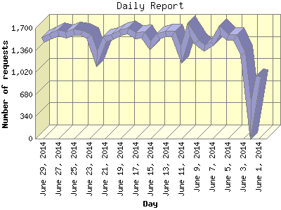

The Daily Report identifies the activity for each day within the reporting period. Remember that one page hit can result in several server requests as the images for each page are loaded.

| Day | Number of requests | Number of page requests | |
|---|---|---|---|
| 1. | June 1, 2014 | 957 | 896 |
| 2. | June 2, 2014 | 281 | 159 |
| 3. | June 3, 2014 | 1,304 | 1,110 |
| 4. | June 4, 2014 | 1,561 | 1,476 |
| 5. | June 5, 2014 | 1,557 | 1,448 |
| 6. | June 6, 2014 | 1,671 | 1,498 |
| 7. | June 7, 2014 | 1,461 | 1,412 |
| 8. | June 8, 2014 | 1,391 | 1,331 |
| 9. | June 9, 2014 | 1,486 | 1,462 |
| 10. | June 10, 2014 | 1,674 | 1,497 |
| 11. | June 11, 2014 | 1,294 | 1,050 |
| 12. | June 12, 2014 | 1,615 | 1,467 |
| 13. | June 13, 2014 | 1,618 | 1,541 |
| 14. | June 14, 2014 | 1,575 | 1,504 |
| 15. | June 15, 2014 | 1,427 | 1,332 |
| 16. | June 16, 2014 | 1,589 | 1,481 |
| 17. | June 17, 2014 | 1,583 | 1,474 |
| 18. | June 18, 2014 | 1,654 | 1,493 |
| 19. | June 19, 2014 | 1,627 | 1,505 |
| 20. | June 20, 2014 | 1,556 | 1,465 |
| 21. | June 21, 2014 | 1,531 | 1,469 |
| 22. | June 22, 2014 | 1,228 | 1,160 |
| 23. | June 23, 2014 | 1,566 | 1,488 |
| 24. | June 24, 2014 | 1,625 | 1,508 |
| 25. | June 25, 2014 | 1,636 | 1,440 |
| 26. | June 26, 2014 | 1,589 | 1,448 |
| 27. | June 27, 2014 | 1,628 | 1,465 |
| 28. | June 28, 2014 | 1,570 | 1,474 |
| 29. | June 29, 2014 | 1,514 | 1,461 |
Most active day June 13, 2014 : 1,541 pages sent. 1,674 requests handled.
Daily average: 1,362 pages sent. 1,474 requests handled.
This report was generated on June 30, 2014 08:23.
Report time frame June 1, 2014 00:00 to June 29, 2014 23:59.
| Web statistics report produced by: analog 6.0 / Report Magic 2.21 |